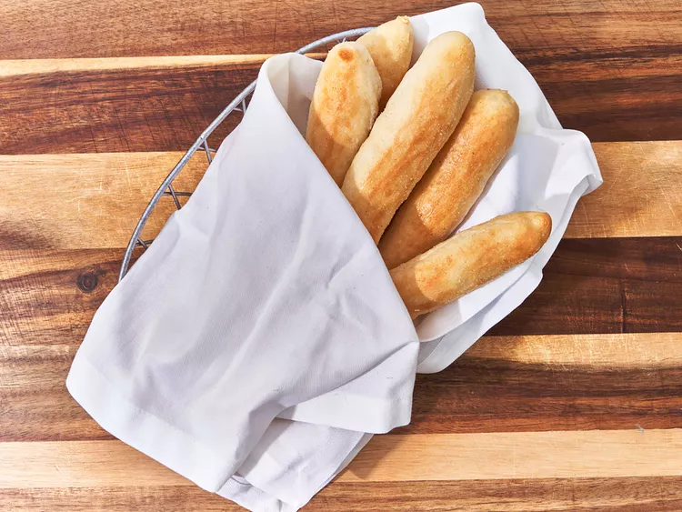

Copycat an Olive Garden Breadstick Yourself!

The Sticks:
These mouthwatering breadsticks will be just as good if not
better than Olive Garden, and do it all yourself with only
3 easy ingredients! Prep is 20 minutes, 30 more to rise,
then 10 minutes of baking, meaning in just one hour you can
be eating your own Olive Garden breadsticks.
Ingredients:
- 1 (25-ounce) package Parkerhouse Roll Dough
(such as Bridgford), thawed
- 6 tablespoons unsalted butter, melted
- 1½ teaspoons garlic salt
Directions:
- Line 2 baking sheets with parchment paper.
- Roll each dough piece into an 8-inch stick, and place
on the prepared baking sheets. Brush sticks with about
half of the melted butter. Let rise in a warm place
(80 to 85 degrees F (26 to 29 degrees C)), free from
drafts, for 30 minutes.
- Preheat the oven to 375 degrees F (190 degrees C)
- Bake breadsticks in the preheated oven until breadseticks
are lightly golden, about 10 minutes, rotating pan
halfway through. Brush with remaining melted butter, and
sprinkle with garlic salt. Serve warm.